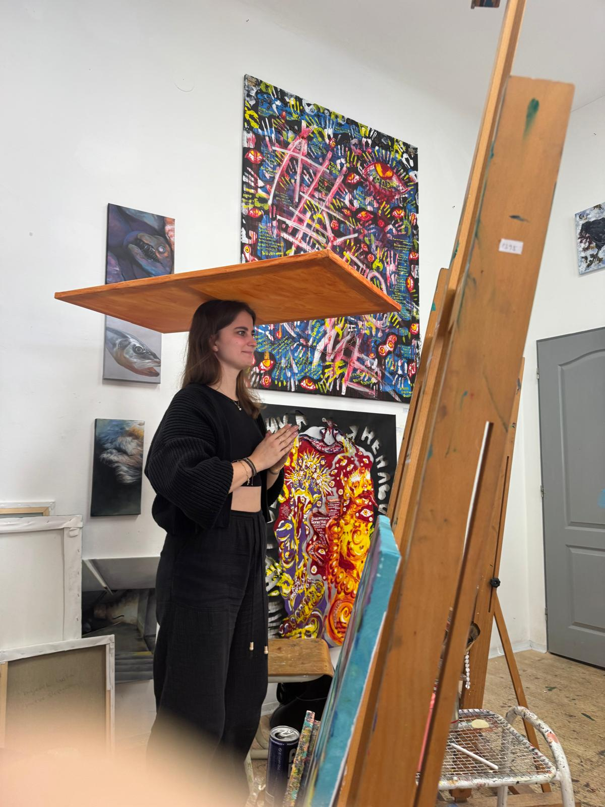
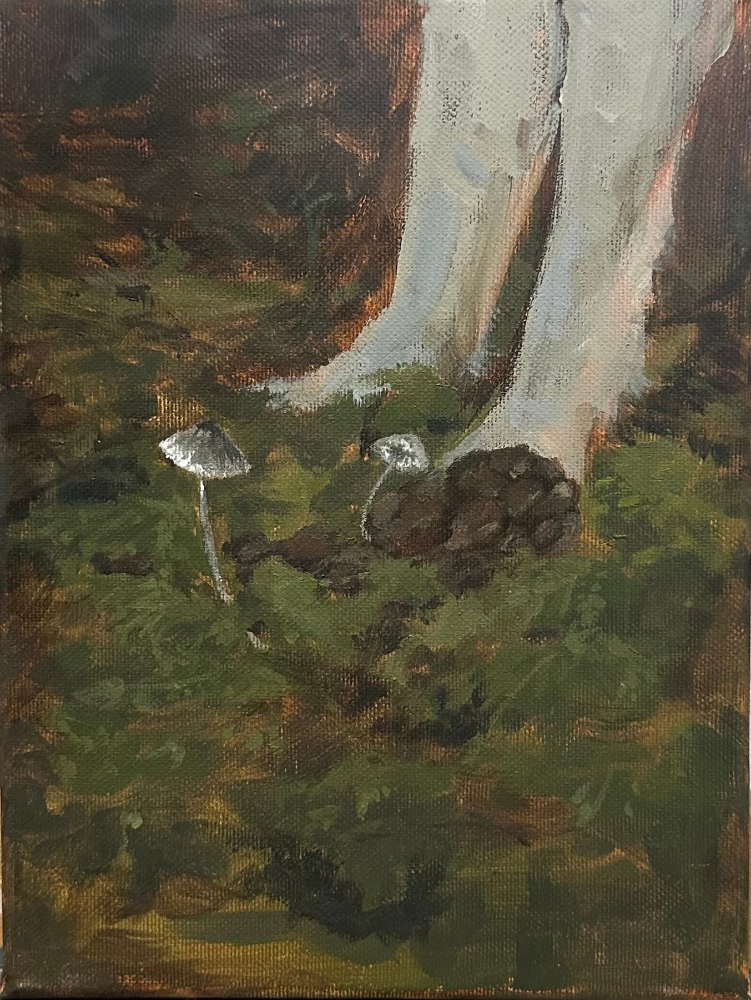
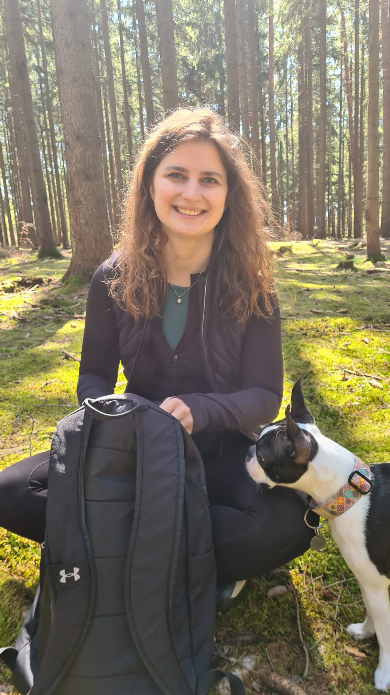

Prohlédnout obraz ↗
Prohlédnout obraz ↗Na zrní
012026 · Akryl na plátně · 90 × 140 cm
KDYBYCH TO UMĚLA ŘÍCT, UŠETŘÍM ZA BARVY.
Jsem Žanet. Pojďte se na chvíli podívat na svět mýma očima.
Do malby přenáším své zážitky, inspiraci z přírody i nečekané okamžiky všedních dnů — zkrátka to, co mě osloví. Pojďte se podívat, co tvořím a jaké příběhy za mými obrazy stojí.
Pojďte se na chvíli zastavit.
Ukážu vám obrazy i kousek sebe.

01 / OBRAZY
Tady s vámi chci sdílet své obrazy.
A postupně i to, jak vznikají.
Prohlédnout obraz ↗2026 · Akryl na plátně · 90 × 140 cm

Prohlédnout sérii · 3 obrazy ↗2024 · Akryl na plátně · 18 × 24 cm · Série 3 obrazů
 Prohlédnout obraz ↗
Prohlédnout obraz ↗2025 · Akryl na plátně · 70 × 90 cm

02 / MŮJ PŘÍBĚH
Těší mě, jsem Žanet
Chci, aby tohle místo bylo víc než jen mou osobní galerií. Abyste tu vedle hotových obrazů našli i mě — v mých slovech, fotografiích, zážitcích.
Budu sem přidávat, na čem právě pracuji, co mě zaujalo a jaké příběhy si moje obrazy nesou. Můj příběh tak můžete sledovat spolu se mnou.
Potkáte mě i na Instagramu ↗03 / TVORBA NA PŘÁNÍ
Máte představu o vlastním obrazu?
Napište mi a probereme ji.
Napište mi, co vás napadlo. Motiv, velikost nebo místo, kam byste obraz chtěli. Na začátku mi stačí i pár vět.
Společně si řekneme, jestli se do vaší představy můžu pustit. Možnosti, cenu i termín s vámi domluvím předem.
Pokud se domluvíme, proberu s vámi i průběh tvorby a předání obrazu. Samotná zpráva vás k ničemu nezavazuje.
04 / ZAČNĚME ROZHOVOREM
Zaujal vás některý obraz? Máte nápad, otázku nebo mi chcete jen napsat pár slov? Budu ráda, když se ozvete.
Napište mi na Instagramu ↗Odkaz vás zavede na můj profil, kde mi můžete poslat zprávu.
Nové obrazy a malé zprávy ode mě
najdete zatím na Instagramu.